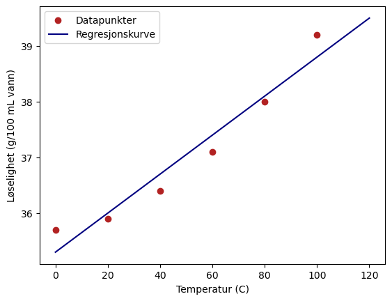

Forelesning 3: Statistisk analyse#
I denne forelesningen skal vi se på statistisk analyse og hvordan vi kan bruke data til å lage modeller.
gjøre statistiske operasjoner på data (pandas og numpy)
tolke statistiske størrelser og visualiseringer (som boksplott)
gjøre og tolke regresjon (numpy)


import pandas as pd
import numpy as np
import matplotlib.pyplot as plt
import seaborn as sns
pingviner = pd.read_csv("https://www.uio.no/studier/emner/matnat/ifi/IN-KJM1900/h21/datafiler/penguings.txt")
pingviner.head()
| species | island | bill_length_mm | bill_depth_mm | flipper_length_mm | body_mass_g | sex | |
|---|---|---|---|---|---|---|---|
| 0 | Adelie | Torgersen | 39.1 | 18.7 | 181.0 | 3750.0 | MALE |
| 1 | Adelie | Torgersen | 39.5 | 17.4 | 186.0 | 3800.0 | FEMALE |
| 2 | Adelie | Torgersen | 40.3 | 18.0 | 195.0 | 3250.0 | FEMALE |
| 3 | Adelie | Torgersen | NaN | NaN | NaN | NaN | NaN |
| 4 | Adelie | Torgersen | 36.7 | 19.3 | 193.0 | 3450.0 | FEMALE |
luffelengde = pingviner["flipper_length_mm"]
gjennomsnitt = luffelengde.mean()
median = luffelengde.median()
pingviner.describe()
| bill_length_mm | bill_depth_mm | flipper_length_mm | body_mass_g | |
|---|---|---|---|---|
| count | 342.000000 | 342.000000 | 342.000000 | 342.000000 |
| mean | 43.921930 | 17.151170 | 200.915205 | 4201.754386 |
| std | 5.459584 | 1.974793 | 14.061714 | 801.954536 |
| min | 32.100000 | 13.100000 | 172.000000 | 2700.000000 |
| 25% | 39.225000 | 15.600000 | 190.000000 | 3550.000000 |
| 50% | 44.450000 | 17.300000 | 197.000000 | 4050.000000 |
| 75% | 48.500000 | 18.700000 | 213.000000 | 4750.000000 |
| max | 59.600000 | 21.500000 | 231.000000 | 6300.000000 |
kons = [2,3,4,4,5,2,3,6]
snitt = np.mean(kons)
avvik = np.std(kons, ddof = 1)
# pandas: snitt = kons.mean()
avvik
1.407885953173359
kons2 = pd.Series(kons)
kons2.std()
1.407885953173359
fil = "https://www.uio.no/studier/emner/matnat/ifi/IN-KJM1900/h20/datafiler/vin.csv"
vin = pd.read_csv(fil)
vin.head()
| fixed acidity | volatile acidity | citric acid | residual sugar | chlorides | free sulfur dioxide | total sulfur dioxide | density | pH | sulphates | alcohol | quality | |
|---|---|---|---|---|---|---|---|---|---|---|---|---|
| 0 | 7.4 | 0.70 | 0.00 | 1.9 | 0.076 | 11.0 | 34.0 | 0.9978 | 3.51 | 0.56 | 9.4 | 5 |
| 1 | 7.8 | 0.88 | 0.00 | 2.6 | 0.098 | 25.0 | 67.0 | 0.9968 | 3.20 | 0.68 | 9.8 | 5 |
| 2 | 7.8 | 0.76 | 0.04 | 2.3 | 0.092 | 15.0 | 54.0 | 0.9970 | 3.26 | 0.65 | 9.8 | 5 |
| 3 | 11.2 | 0.28 | 0.56 | 1.9 | 0.075 | 17.0 | 60.0 | 0.9980 | 3.16 | 0.58 | 9.8 | 6 |
| 4 | 7.4 | 0.70 | 0.00 | 1.9 | 0.076 | 11.0 | 34.0 | 0.9978 | 3.51 | 0.56 | 9.4 | 5 |
pH = vin["pH"]
snitt_pH = pH.mean()
avvik_pH = pH.std()
print(f"pH-en er: {snitt_pH:.2f} +- {avvik_pH:.2f}")
pH-en er: 3.31 +- 0.15
Q1, Q2, Q3 = luffelengde.quantile([0.25, 0.50, 0.75])
IQR = Q3 - Q1
print(f"Luffelengde: {Q2} +- {IQR} mm")
Luffelengde: 197.0 +- 23.0 mm
sns.boxplot(data = vin, x = "quality", y = "alcohol")
<AxesSubplot: xlabel='quality', ylabel='alcohol'>
kons = [2,3,4,4,5,2,3,6,9]
sns.boxplot(y = kons)
<AxesSubplot: >
Regresjon#
Temperatur (°C) |
NH\(_3\), løselighet (g/100 mL H\(_2\)O) |
NaCl, Løselighet (g/100 mL H\(_2\)O) |
|---|---|---|
0 |
88.5 |
35.7 |
20 |
56.0 |
35.9 |
40 |
34.0 |
36.4 |
60 |
20.0 |
37.1 |
80 |
11.0 |
38.0 |
100 |
7.0 |
39.2 |
import numpy as np
import matplotlib.pyplot as plt
# La oss gjøre en regresjon
T = [0, 20, 40, 60, 80, 100]
sol_NaCl = [35.7, 35.9, 36.4, 37.1, 38, 39.2]
a, b = np.polyfit(T, sol_NaCl, 1)
x = np.linspace(0,120,1000)
y = a*x + b
plt.scatter(T, sol_NaCl, color = "firebrick", label = "Datapunkter")
plt.plot(x, y, color = "navy", label = "Regresjonskurve")
plt.xlabel("Temperatur (C)")
plt.ylabel("Løselighet (g/100 mL vann)")
plt.legend()
plt.show()
